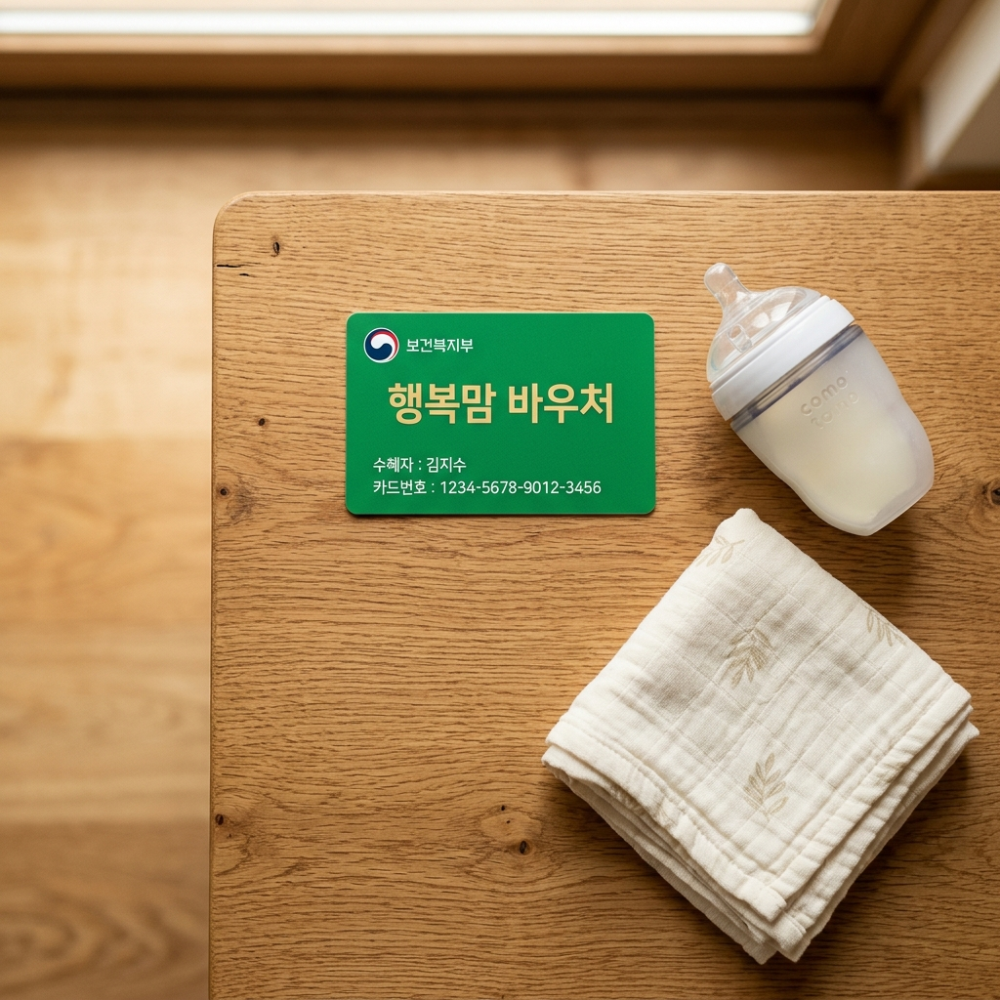

부모급여는 출산이나 양육으로 소득이 줄어드는 시기에 가정의 경제적 부담을 덜어 주기 위해 만 0세부터 만 1세까지, 즉 생후 0개월부터 23개월까지의 영아를 키우는 가정에 매달 현금을 지원하는 제도입니다.
가장 큰 특징은 소득이나 재산 기준이 전혀 없다는 점입니다. 맞벌이든 외벌이든, 소득이 높든 낮든 상관없이 만 2세 미만 아동을 양육하고 있다면 누구나 신청할 수 있습니다. 보편적 지원이라는 점에서 자격 조건을 따로 따질 필요가 없어 신청 문턱이 낮은 편입니다.
지급 대상은 대한민국 국적을 가지고 국내에 거주하는 아동입니다. 부모급여는 아이 한 명 한 명을 기준으로 지급되므로, 쌍둥이를 키우는 가정이라면 각각의 아동에 대해 따로 신청하고 따로 받게 됩니다.
또 하나 기억해 둘 점은, 부모급여는 만 0세와 만 1세 구간에만 지급된다는 사실입니다. 아이가 24개월을 넘어가면 부모급여는 끝나고, 그 뒤로는 가정양육수당이나 어린이집 보육료 등 다른 지원 체계로 넘어가게 됩니다.
한 가지 더 짚어 두자면, 부모급여는 양육의 방식을 가리지 않습니다. 부모가 직접 가정에서 키우든, 조부모의 손을 빌리든, 어린이집에 보내든 지원 대상이라는 점에는 변함이 없습니다. 다만 어린이집을 이용하는 경우에는 뒤에서 설명드릴 보육료 바우처와의 관계 때문에 통장에 들어오는 현금 액수가 달라질 뿐입니다.
제도의 근거와 세부 안내는 복지로와 보건복지부 홈페이지에서 '부모급여 지원' 항목으로 확인하실 수 있으니, 우리 집 상황에 맞는지 미리 살펴보시면 좋겠습니다. 처음 부모가 되면 챙길 것이 많아 정신이 없지만, 부모급여만큼은 자격 조건이 단순한 편이라 한 번만 개념을 잡아 두면 그리 어렵지 않습니다.
가장 궁금하실 금액부터 짚어 보겠습니다. 2026년 부모급여는 만 0세 아동에게 월 100만 원, 만 1세 아동에게 월 50만 원이 지급됩니다.
여기서 '만 0세'는 생후 0개월부터 11개월까지, '만 1세'는 생후 12개월부터 23개월까지를 의미합니다. 즉 아이가 태어난 달부터 첫돌 직전까지는 월 100만 원, 첫돌이 지난 뒤부터 두 돌 직전까지는 월 50만 원이 들어오는 구조입니다.
단순히 계산해 보면, 만 0세 1년 동안 최대 약 1,200만 원, 만 1세 1년 동안 약 600만 원 수준의 현금이 가정에 지원되는 셈입니다. 갓 태어난 아기를 키우는 첫 1년의 부담이 가장 크다는 점을 고려해 0세 구간에 더 많은 금액을 몰아 준 것입니다.
다만 일부 자료에서는 2026년 금액이 더 인상되었다는 내용도 보이는데, 정책 금액은 해마다 변동될 수 있으므로 가장 정확한 최신 지급액은 신청 직전에 복지로나 보건복지부 공식 공고에서 다시 확인하시는 것이 안전합니다. 인터넷에 떠도는 오래된 정보를 그대로 믿고 가계 계획을 세웠다가 실제 입금액과 달라 당황하는 경우가 적지 않으니, 숫자만큼은 늘 1차 출처를 기준으로 삼으시길 권합니다.
이 금액은 아이 한 명을 기준으로 한 것이라는 점도 기억해 두면 좋습니다. 쌍둥이라면 두 명분, 세쌍둥이라면 세 명분이 각각 따로 들어오므로, 다둥이 가정은 그만큼 지원 규모도 커집니다.
아래 표로 2026년 기준 부모급여 지급액을 한눈에 정리해 두었습니다.
| 구분 | 대상 연령 | 월 지급액 |
|---|---|---|
| 만 0세 | 생후 0~11개월 | 월 100만 원 |
| 만 1세 | 생후 12~23개월 | 월 50만 원 |
지급일도 무척 중요한 부분입니다. 부모급여는 원칙적으로 매월 25일에 신청한 계좌로 입금됩니다. 전국 어디서나 같은 날짜를 기준으로 지급되므로, 한 달 가계 계획을 세울 때 25일을 기준점으로 잡아 두면 편리합니다.
만약 25일이 토요일이나 일요일, 또는 공휴일과 겹친다면 그 직전 평일에 미리 입금됩니다. 그래서 어떤 달에는 23일이나 24일에 들어오기도 하니, "왜 25일에 안 들어왔지" 하고 걱정하실 필요는 없습니다.
처음 신청한 달의 경우에는 신청 시점과 출생일에 따라 첫 입금일이 다소 다를 수 있습니다. 출생 후 비교적 빠르게 신청했다면 보통 신청한 다음 달 25일에 첫 지급이 이루어지는 경우가 많습니다.
입금 계좌는 신청 시 등록한 보호자 명의 계좌로 들어옵니다. 계좌를 바꾸고 싶다면 복지로나 주민센터를 통해 계좌 변경 신청을 해야 하며, 변경 처리 시점에 따라 그달 지급이 기존 계좌로 나갈 수도 있으니 변경은 여유 있게 미리 해 두시는 편이 좋습니다.
이사 등으로 주소지가 바뀌더라도 부모급여 자격 자체가 사라지는 것은 아니지만, 행정 처리 과정에서 지급이 잠시 지연될 수 있습니다. 주소를 옮길 일이 있다면 전입신고 후 부모급여 관련 사항도 함께 확인해 두시면 마음이 놓입니다.
입금자명은 보통 지자체나 정부 지원 명목으로 표기되므로, 처음 받으실 때 "이게 부모급여가 맞나" 싶다면 복지로 마이페이지에서 지급 내역을 대조해 보시면 됩니다. 매달 같은 금액이 같은 날짜에 들어오는 것이 정상이니, 만약 금액이 갑자기 달라졌다면 아이의 개월 수 전환이나 어린이집 이용 여부가 바뀐 것은 아닌지 점검해 보시기 바랍니다.
정확한 지급일과 입금 내역은 복지로 마이페이지나 등록 계좌의 입출금 내역에서 확인할 수 있습니다.
부모급여가 매달 들어오는 현금이라면, 첫만남이용권은 출생 시 한 번 지급되는 일시금 성격의 바우처입니다. 새 생명의 탄생을 축하하고 초기 양육에 필요한 비용을 돕기 위한 지원입니다.
지급 금액은 출생 순위에 따라 다릅니다. 첫째 아이는 200만 원, 둘째 아이부터는 300만 원이 지급됩니다. 둘째 이상에게 금액을 더 많이 책정한 것은 다자녀 가정의 부담을 한층 덜어 주기 위한 취지입니다.
중요한 점은 첫만남이용권이 현금이 아니라 바우처, 즉 포인트 형태로 지급된다는 사실입니다. 신청한 아동 명의로 국민행복카드에 포인트가 충전되고, 이 카드를 체크카드나 신용카드처럼 사용하면 충전된 포인트에서 차감되는 방식입니다.
쌍둥이라면 각각 출생 순위에 따라 따로 지급되므로, 예컨대 첫째와 둘째가 동시에 태어난 쌍둥이의 경우 한 아이는 200만 원, 다른 아이는 300만 원이 각각 충전됩니다.
부모급여와 첫만남이용권은 성격이 다르기 때문에 둘 다 받을 수 있다는 점도 안심하셔도 됩니다. 부모급여는 매달 통장으로, 첫만남이용권은 출생 시 카드 포인트로 한 번, 이렇게 서로 다른 통로로 들어오므로 어느 하나를 받으면 다른 하나가 줄어드는 식의 관계가 아닙니다.
첫만남이용권의 자세한 안내는 복지로 '첫만남이용권' 항목과 사회서비스 전자바우처 누리집에서 확인하실 수 있습니다.
첫만남이용권은 사용처가 비교적 넓은 편이라 활용도가 높습니다. 산후조리원, 대형마트, 약국, 병원, 온라인몰 등 일상적인 육아 지출이 발생하는 대부분의 업종에서 사용할 수 있습니다.
물론 사용할 수 없는 곳도 있습니다. 유흥업종, 사행업종, 마사지 등 위생업종(이미용실은 사용 가능), 레저업종, 성인용품 등 기타업종, 면세점 등에서는 사용이 제한됩니다. 정리하면 이런 제한 업종을 제외한 거의 모든 업종에서, 온라인 구매를 포함해 자유롭게 쓸 수 있다고 이해하시면 됩니다.
지역에 따라 세부 사용처가 조금씩 다를 수 있으므로, 사용 전에 국민행복카드 바우처 안내(voucher.go.kr)에서 우리 지역 사용처와 잔액을 한 번 확인해 보시는 것을 추천합니다.
유효기간도 반드시 챙겨야 합니다. 2024년 1월 1일 이후 출생한 아동의 경우 사용기간은 아동 출생일로부터 2년입니다. 즉 두 돌이 되기 전까지 다 써야 하며, 기한을 넘기면 남은 포인트는 소멸됩니다.
200만 원이나 300만 원이 적지 않은 금액인 만큼, 산후조리원 비용이나 분유·기저귀 같은 꾸준한 지출에 계획적으로 나눠 쓰면 유효기간 안에 알뜰하게 소진할 수 있습니다. 출산 직후에는 산후조리원처럼 한 번에 큰돈이 나가는 항목이 있어 첫만남이용권을 여기에 쓰는 분이 많고, 그 뒤로는 기저귀와 분유, 예방접종 등 자잘하지만 꾸준한 지출에 나눠 쓰는 식으로 활용하면 부담을 크게 덜 수 있습니다.
잔액과 사용 내역은 국민행복카드를 발급한 카드사 앱이나 바우처 누리집에서 수시로 확인할 수 있습니다. "얼마나 남았는지" "언제까지인지"를 가끔씩만 챙겨 봐도, 기한을 넘겨 아깝게 소멸시키는 일은 충분히 피할 수 있습니다.
부모급여와 첫만남이용권은 신청 채널이 같아 한 번에 처리할 수 있습니다. 가장 편한 방법은 출생신고를 할 때 '행복출산 원스톱 서비스'를 함께 이용하는 것입니다.
주민센터에서 출생신고를 하면서 담당 직원에게 "부모급여, 첫만남이용권, 아동수당까지 같이 신청할게요"라고 말하면, 여러 지원을 한 번에 묶어 접수할 수 있습니다. 서류를 따로따로 들고 여러 번 방문할 필요가 없어 가장 번거로움이 적은 방법입니다.
온라인 신청도 가능합니다. 정부24(gov.kr)의 '행복출산 원스톱 서비스'나 복지로(bokjiro.go.kr), 또는 모바일 복지로 앱을 통해 집에서도 신청할 수 있습니다. 공동인증서나 간편인증으로 본인 확인을 한 뒤 안내에 따라 입력하면 됩니다.
아래 단계별 흐름을 참고하시면 한결 수월하게 진행하실 수 있습니다.
지원금에서 가장 아쉬운 실수가 바로 신청 기한을 놓치는 것입니다. 부모급여는 아이가 태어난 후 60일 이내에 신청해야 출생한 달까지 소급해서 한 푼도 빠짐없이 받을 수 있습니다.
만약 60일이 지난 뒤에 신청하면, 출생한 달까지 소급되지 않고 신청한 달부터 지급이 시작됩니다. 즉 신청이 늦은 만큼의 금액은 받지 못하게 되는 셈이니, 갓 출산한 정신없는 시기라도 기한만큼은 꼭 달력에 적어 두시기 바랍니다.
첫만남이용권도 시간 제한이 있습니다. 아동 출생일(주민등록상 생년월일)로부터 1년이 지나면 바우처 신청 자체가 불가능해집니다. 부모급여 60일 기한과 함께, 첫만남이용권은 1년 이내 신청이라는 점을 따로 기억해 두셔야 합니다.
정리하면, 출생신고를 하는 그 자리에서 부모급여와 첫만남이용권을 함께 신청해 두는 것이 가장 확실합니다. 그러면 기한 문제로 손해 볼 일이 없습니다.
실제로 출산 직후에는 산모의 회복과 신생아 돌봄만으로도 하루가 빠듯해 행정 절차를 미루기 쉽습니다. 그래서 배우자나 가족 중 한 사람이 출생신고와 지원금 신청을 책임지고 맡아 두는 것을 권합니다. 두 사람이 서로 "했겠지" 하고 미루다 기한을 넘기는 경우가 의외로 흔하기 때문입니다.
혹시 기한이 임박했거나 이미 지났다면, 늦더라도 신청하는 편이 낫습니다. 정확한 소급 적용 여부는 복지로나 주민센터에서 우리 아이의 출생일을 기준으로 다시 확인하시기 바랍니다.

아이를 어린이집에 보내기 시작하면 부모급여 지급 방식이 조금 달라집니다. 어린이집을 이용하면 정부가 보육료 바우처를 지원하는데, 이 보육료 바우처를 부모급여 금액에서 먼저 차감하고 남는 차액만 현금으로 들어오게 됩니다.
예를 들어 만 0세 아이가 어린이집을 이용하는 경우, 부모급여 100만 원에서 영유아 보육료 바우처에 해당하는 금액을 차감한 나머지가 현금 차액으로 지급됩니다. 만 1세의 경우에는 보육료 바우처 금액이 부모급여 50만 원과 비슷하거나 더 커서, 현금으로 추가 지급되는 차액이 없을 수도 있습니다.
다시 말해, 어린이집을 이용하면 '보육료 바우처(어린이집에 직접 지원) + 차액 현금'의 형태가 되고, 가정에서 양육하면 부모급여 전액이 현금으로 들어오는 차이가 있습니다. 어느 쪽이든 받는 총 혜택의 취지는 같지만, 통장에 찍히는 현금 액수는 달라지는 것입니다.
어린이집 이용 아동의 차액 지급일은 부모급여 기본 지급일과 달라질 수 있으니, 정확한 입금일과 금액은 복지로나 어린이집을 통해 확인하시는 것이 좋습니다. 보육료 단가는 매년 조정되므로 구체적인 차액 금액 역시 그해 공고를 기준으로 보셔야 합니다.
한 가지 더 알아 두면 좋은 점은, 가정양육에서 어린이집 이용으로(또는 그 반대로) 양육 형태가 바뀌면 그에 맞춰 지급 방식도 자동으로 조정된다는 것입니다. 다만 변경 신고 시점에 따라 적용되는 달이 달라질 수 있으니, 어린이집 입소나 퇴소가 결정되면 가급적 빨리 복지로나 주민센터에 상황을 알려 두는 것이 좋습니다.
가정양육과 어린이집 이용 사이에서 고민 중이라면, 단순 금액보다는 아이의 발달 시기와 우리 가정의 돌봄 여건을 함께 고려해 결정하시기를 권합니다.
이름이 비슷해서 가장 많이 헷갈려하시는 부분이 바로 이 세 가지의 차이입니다. 결론부터 말하면 지원 대상 연령과 성격이 모두 다르고, 일부는 중복으로 받을 수 있습니다.
부모급여는 앞서 설명했듯 만 0세와 만 1세, 즉 생후 23개월까지의 영아에게 0세 월 100만 원, 1세 월 50만 원을 지급하는 제도입니다. 소득 기준이 없다는 점이 핵심입니다.
아동수당은 만 0세부터 만 8세 미만(95개월까지)의 모든 아동에게 매월 일정액을 지급하는 보편적 수당입니다. 일반적으로 월 10만 원 수준이며, 지역에 따라 금액이 다소 달라질 수 있습니다. 중요한 점은 아동수당은 부모급여와 중복으로 받을 수 있다는 것입니다. 즉 0세 아이라면 부모급여와 아동수당을 함께 받을 수 있습니다.
가정양육수당은 어린이집이나 유치원, 종일제 아이돌봄 서비스를 이용하지 않고 가정에서 키우는 경우, 부모급여가 끝나는 24개월 이후부터 지원되는 수당입니다. 부모급여 기간과는 시기가 겹치지 않습니다.
여기에 더해 출산 시 한 번 받는 첫만남이용권까지 합치면, 0세 아이를 둔 가정은 부모급여·아동수당·첫만남이용권을 동시에 챙길 수 있는 셈입니다. 이름이 비슷해 하나만 받는 줄 아는 분이 많은데, 각각 별개의 제도라 중복으로 받을 수 있다는 점을 꼭 기억해 두시기 바랍니다.
아래 표로 세 제도의 차이를 간단히 비교해 두었으니, 우리 아이가 어떤 지원을 받을 수 있는지 점검해 보시기 바랍니다.
| 제도 | 대상 연령 | 특징 |
|---|---|---|
| 부모급여 | 0~23개월 | 0세 100만 원·1세 50만 원, 소득기준 없음 |
| 아동수당 | 0~95개월 | 월 10만 원 안팎, 부모급여와 중복 가능 |
| 가정양육수당 | 24개월 이후 가정양육 | 어린이집 미이용 시 지원 |
처음 출생신고를 하러 가던 날, 어떤 지원을 어떻게 받아야 하는지 몰라 막막했던 기억을 떠올리며 이 글을 정리했습니다. 핵심만 다시 짚어 드리겠습니다.
부모급여는 0세 월 100만 원, 1세 월 50만 원이 매월 25일 현금으로 들어옵니다. 첫만남이용권은 첫째 200만 원, 둘째 이상 300만 원이 국민행복카드 바우처로 한 번 지급되고, 출생일로부터 2년 안에 사용해야 합니다.
신청은 출생신고와 함께 '행복출산 원스톱 서비스'로 한 번에 하는 것이 가장 편하고 확실합니다. 부모급여는 생후 60일 이내, 첫만남이용권은 출생 후 1년 이내라는 기한만큼은 절대 놓치지 마시기 바랍니다.
마지막으로 다시 한번 강조드리면, 금액과 지급일, 사용처, 기한 같은 핵심 정보는 정책 개정에 따라 바뀔 수 있습니다. 실제 신청 전에는 복지로(bokjiro.go.kr), 정부24(gov.kr), 보건복지부 공식 안내를 최종 기준으로 꼭 한 번 더 확인하시기를 권해 드립니다.
덧붙여, 부모급여와 아동수당은 서로 별개라 함께 받을 수 있고, 첫만남이용권까지 더하면 0세 가정은 세 가지 지원을 동시에 챙길 수 있습니다. 이름이 비슷해 하나만 받는 줄 오해하기 쉬우니, 출생신고 때 한꺼번에 신청해 두는 것이 가장 깔끔합니다.
새 가족을 맞이한 모든 가정에 이 글이 작은 도움이 되었으면 합니다. 받을 수 있는 지원은 빠짐없이 챙기시고, 무엇보다 건강하게 아이를 키워 가시길 응원합니다.